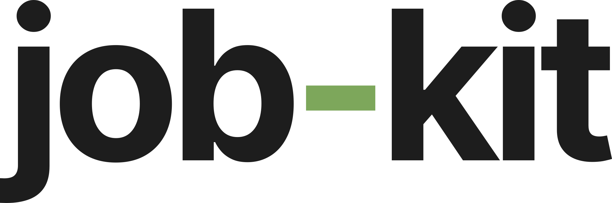
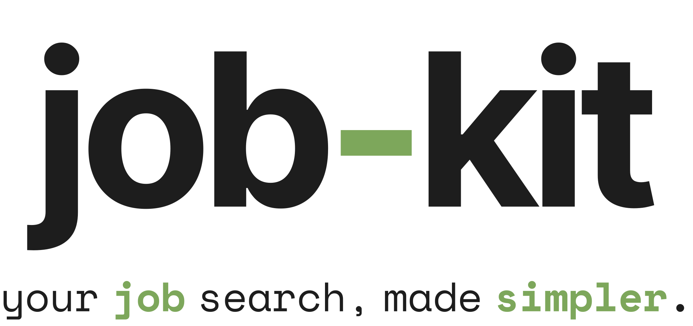
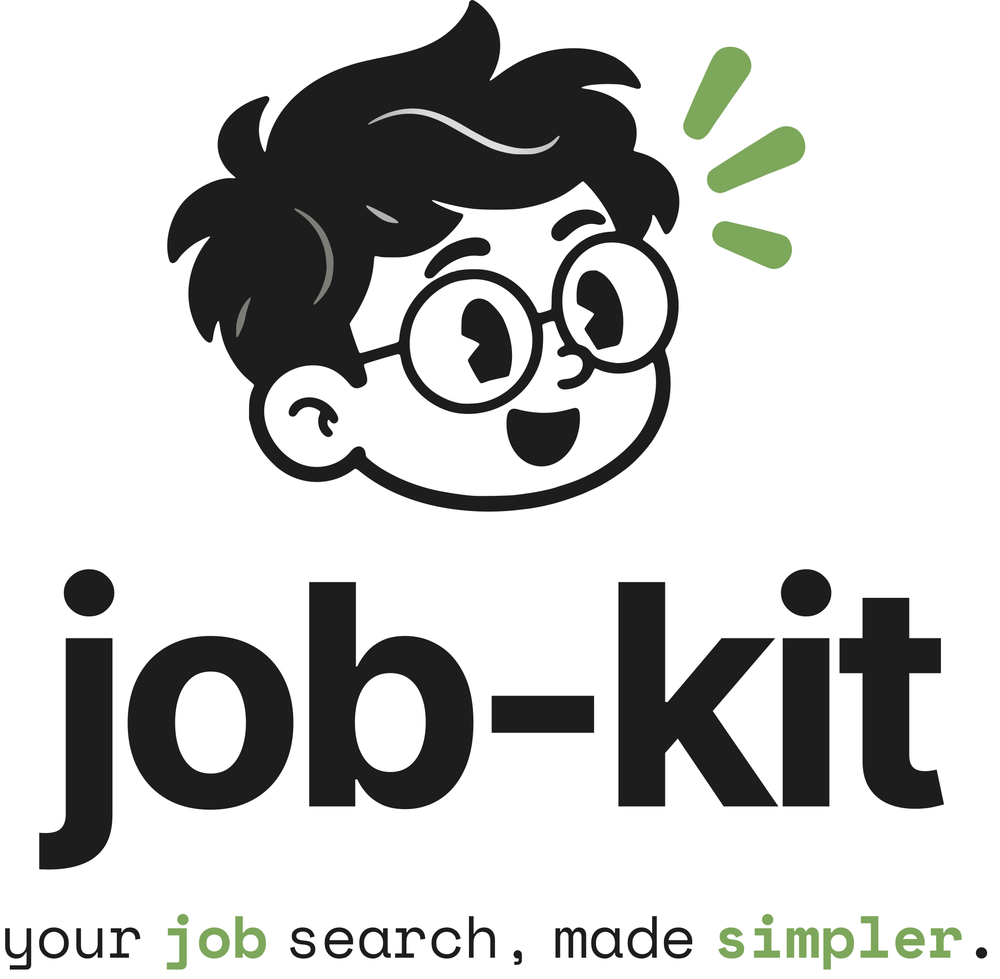
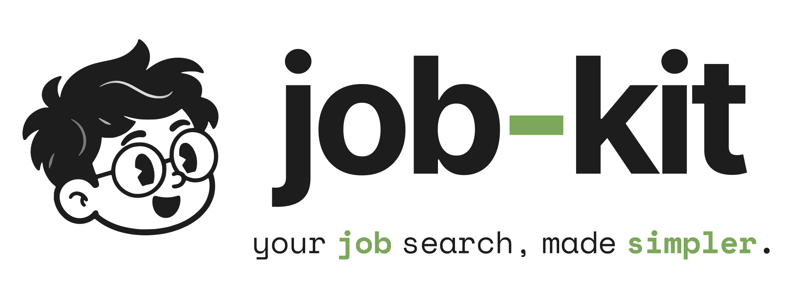

Logo lockups — twin swaps with theme








Sidebar header treatment
28px mark beside the wordmark set in Space Grotesk, uppercase, wide tracking — app-sidebar.tsx:76-97.
Favicon & maskable raster
Every favicon, app icon, OG image and logo PNG under packages/frontend/public/ is generated from these SVGs by scripts/brand/render.py — edit the vector, rerun the script, never hand-edit a PNG. icon-512-maskable.png is plated and inset so the mark survives a maskable launcher's circular crop.